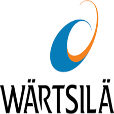
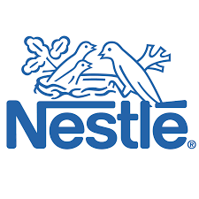

Student Intern at Wartsila
August, 2021 - February, 2022
Here I worked under the operations department and the electrical maintenance department. During my internship here, I assisted in the running of six dual fuel engines that powered the entirety of Lafarge Africa PLC, Ewekoro, Ogun State, assisted in both major and minor maintenance of the engines, carried out troubleshooting of faulty electrical components in the company, designed the piping and instrumentation diagram (P & ID) for the water lines of the entire power plant, carried out a power generation project under the supervision of the tube mentoring program.

Student Intern at Nestle
March, 2020 - June, 2020 & June, 2022 - August, 2022
I underwent two internship programs at Nestle. During my first internship here, I worked under the electrical, instrumentation and automation (EI & A) department where I assisted in planned maintenance of the department and mostly carried out troubleshooting of faulty electrical components in the company.
My second internship was under the Culinary department where I carried out daily planned maintenance of the machines in both the manufacturing and production units.